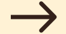

Rebecca Amsellem a fierce struggle

Rebecca Amsellem propose de multiples solutions afin de rendre les salaires égaux entre hommes et femmes. D’un autre côté en se fiant aux statistiques elle constate qu’il y en a encore pour plus de 100 ans avant de ne plus avoir d’inégalité.
The other countries that have succeeded inspire him but France still has some progress to make.
A glaring difference
Rebecca Amsellem will build on the salary in order to create her movement. She created a movement called #4November16h16, not really because it changes every year... But this is not a random date. First of all this movement means that from 4 November at 4.16 for example women will work for free until the end of the year.
In 2016, for example, the movement was called #7November 1634 and women were paid 15.1% less than men. So that percentage is reported on the days of the year in which we work, so that gives us that date.
The paradox of this movement is that more and more laws are put in place to make the salary equal among all but the date is only getting farther and farther away from the following year. The wage is therefore less and less equal and the problem is far from being solved.
An equality pact
Rebecca Amsellem is not only going to see the differences, but she’s going to do everything she can to find solutions. The first fairly reliable solution that it proposes is based on the certificate of equality.
This idea comes straight from Iceland, which is very demanding on equal pay. Normally it is up to women to show that their wages are lower than a man in the company for example, but this method leads to nothing because a lot of steps have to be taken. Whereas in Iceland it is up to the companies to prove very precisely that if there is a wage gap it is not related to sex, otherwise the company will not be in good standing with the equality certificate.
One of the proposals by Rebecca Amsellem But it proposes a multitude of standards to be put in place to have equal wages for all.
For example, it wants to increase the value of wages in the trades where men are the least present. For example, housekeepers, care-related occupations, etc.
An eternal fight
Women have always suffered enormous inequality from a work perspective, which is why Rebecca Amsellem is a feminist who reflects the past, and it is because of feminists like her that a woman’s salary becomes equitable. As a reminder before 1907 women could not freely own their wages he had to have the agreement of their husband.
Even after several laws the spouses persevered in controlling their wife’s money. This completely reflects what is happening today because since 1972 having an unfair salary is strictly prohibited yet this law has not changed anything.
So it’s very hard to change that kind of inequality. This is a never-ending fight for Rebecca Amsellem because according to the calculations they make each year equal pay will be achieved only in 2168
Previous article

Next article
Would you like to see more?
Do not hesitate to look at the other articles proposed by other students.